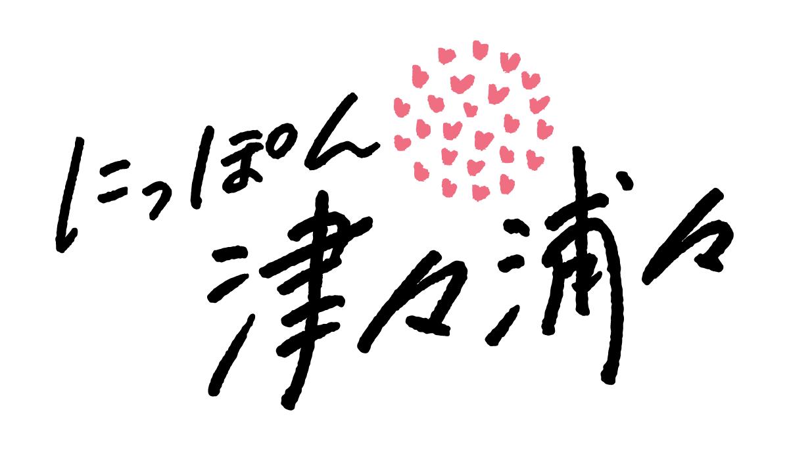
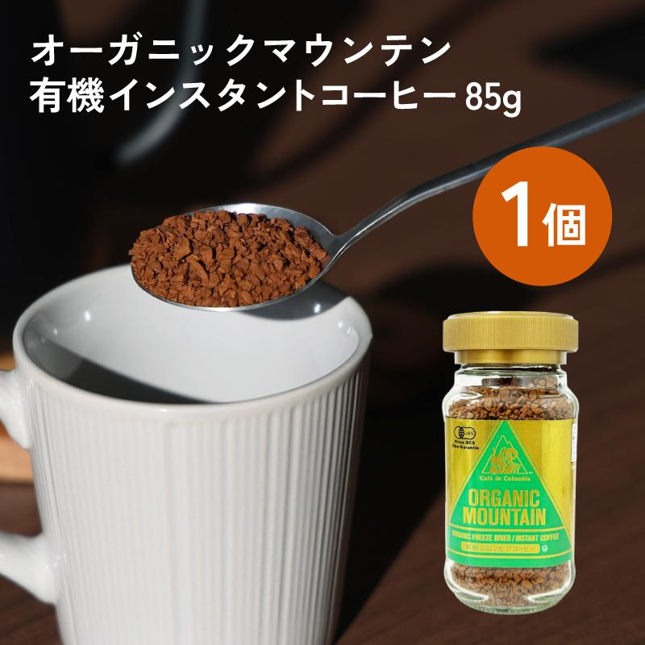
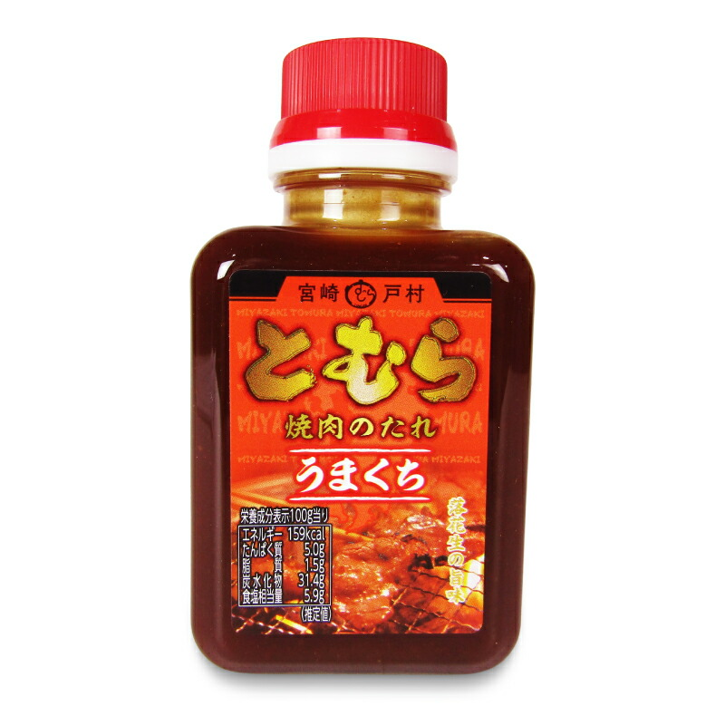
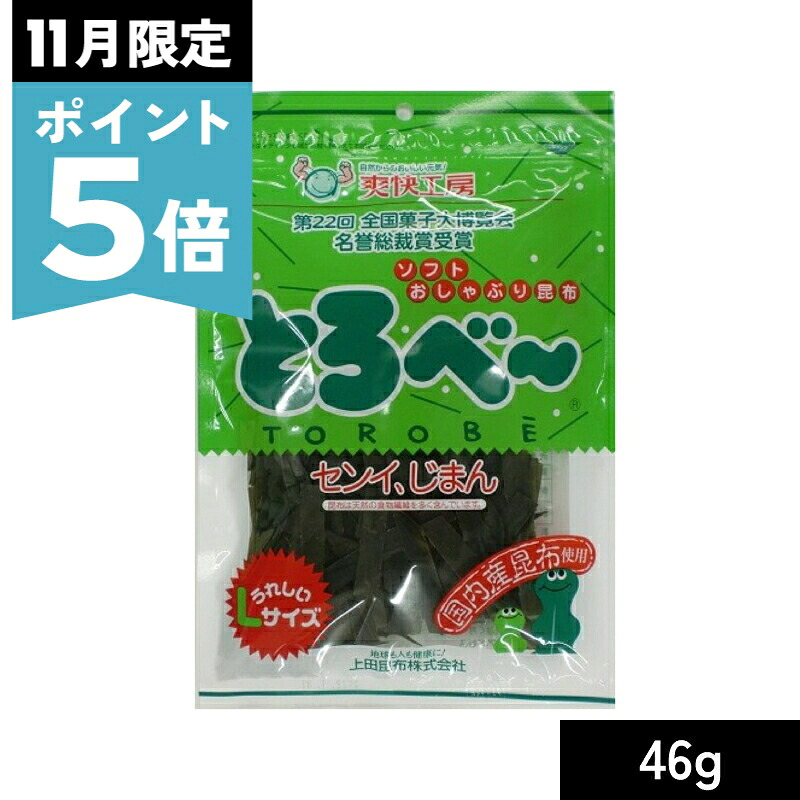
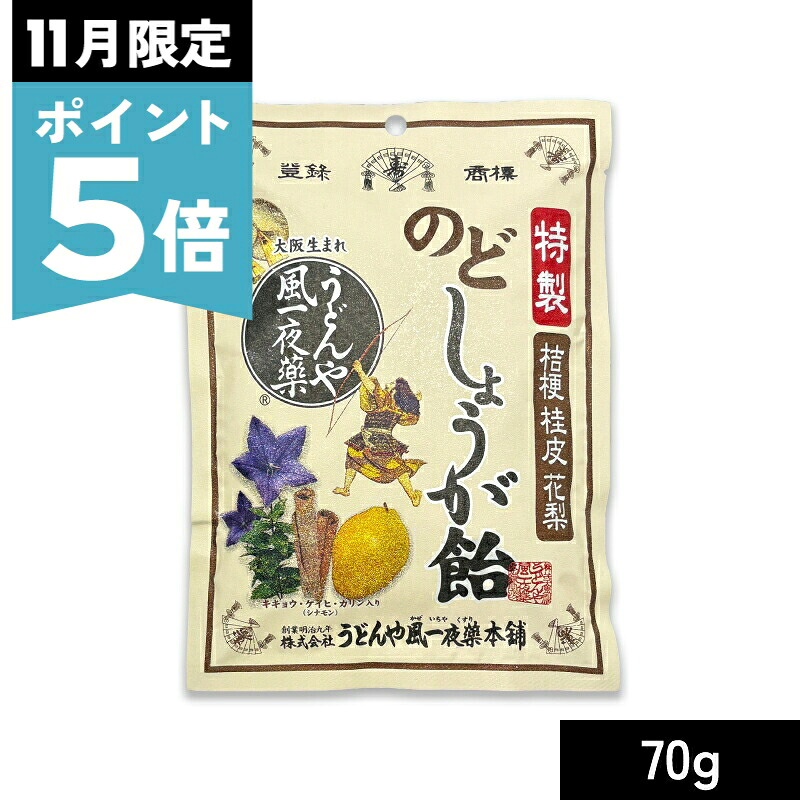
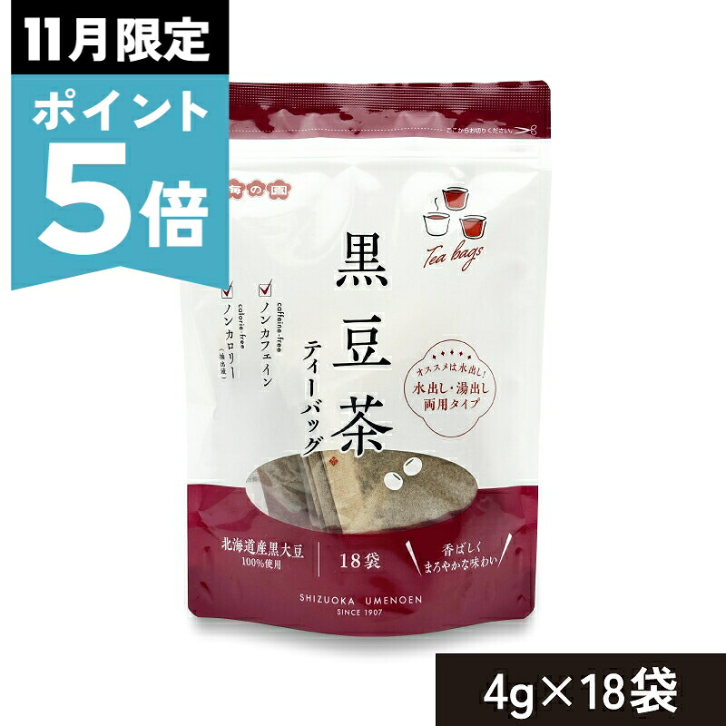
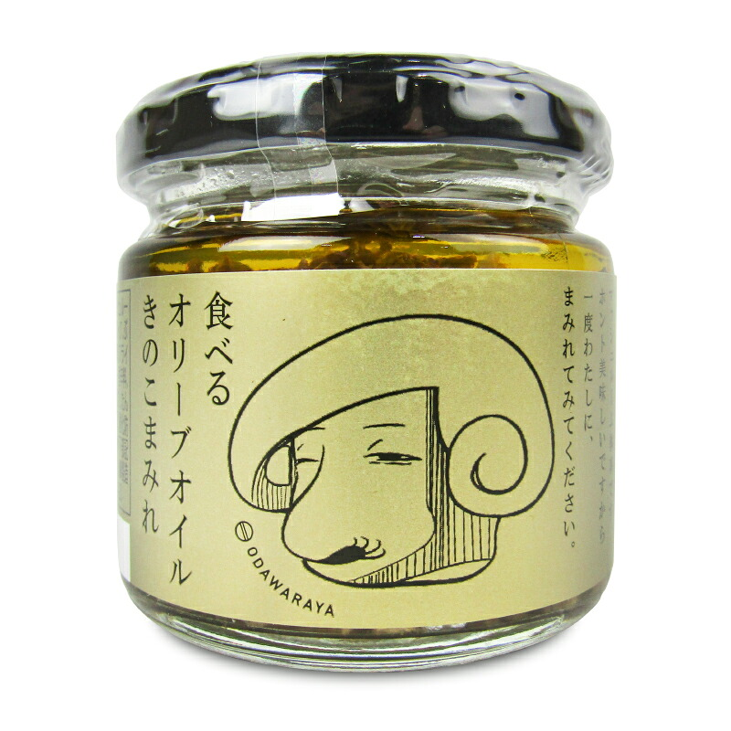
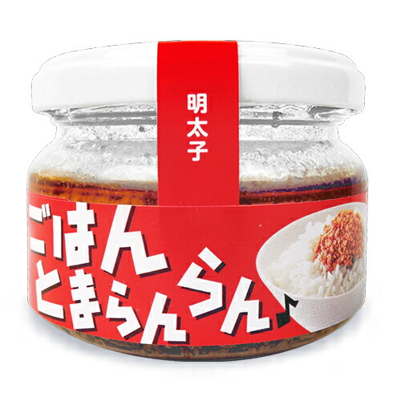
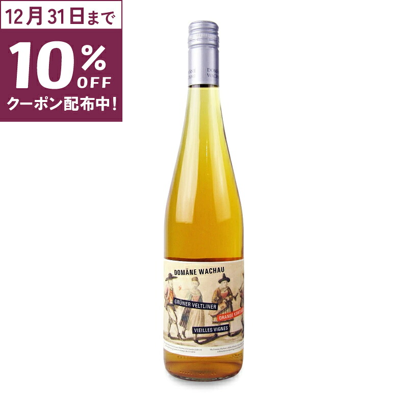

01
土日祝日も毎日出荷
お休みの日も出荷・配送しています。
RAKUTEN
SHOP OF THE YEAR
2026
投票は11.30(月)09:59まで
あなたの1票でベストショップが決まる！
お気に入りのショップに投票すると
最大10,000ポイント！合計10万名様に当たる！
※詳細は楽天市場の投票ページをご確認ください
お客様へ
いつもにっぽん津々浦々をご利用いただき、ありがとうございます。
私たちは、つくり手・届け手・使い手、それぞれの「好き」をていねいに選び、まじめに届けることを大切にしてきました。
好きをくまなく。にっぽん津々浦々のブランドスローガン
おいしいものから便利なものまで、もっと暮らしが「好き」になる商品を、これからも全国津々浦々からお届けしてまいります。
今年も楽天市場「ショップ・オブ・ザ・イヤー」の投票が始まりました。にっぽん津々浦々に、あなたの一票をお寄せいただけますと幸いです。
2026年11月にっぽん津々浦々 スタッフ一同
たくさんのお客様の「好き」に
支えていただいています
ショップ評価★4.87
いただいたレビュー30,768件
※ショップ評価・レビュー件数は
2026年11月2日時点
お休みの日も出荷・配送しています。
いろいろ組み合わせて、まとめ買いもおトクに。
大切な商品を、ひとつひとつ心を込めてお届けします。
このページの投票ボタンから、楽天市場の投票ページへ
お持ちの楽天会員IDでログインしてください
にっぽん津々浦々に一票と、ひとことメッセージを
投票ページの応援メッセージ欄に
ひとことお寄せいただけるとうれしいです
知らなかったおいしいものに出会えました
梱包がていねいでうれしい
レシピの特集を楽しみにしています
これからも応援しています
いただいたご意見や温かいメッセージは
スタッフ一同の大きな励みになります

投票は11月30日（月）09:59まで
投票すると最大10,000ポイント！
合計10万名様に当たる！
全国津々浦々から集めた
「好き」をどうぞ

コーヒー1,875円

調味料368円〜

おやつ745円〜

おやつ552円〜

お茶628円〜

ご飯のお供758円〜

ご飯のお供663円〜

ワイン2,825円
※価格は2026年11月2日時点